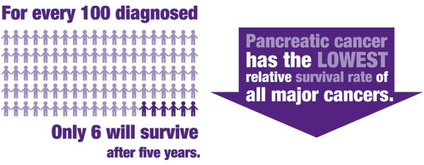

|
|
|---|
|
Task 1 - Describe in detail the problem your team selected and explain why it is important for your team to investigate the problem: Only 23% of people diagnosed with pancreatic cancer live at least one year after their diagnosis and only 4% of people live at least five years after their diagnosis. These numbers reveal the startlingly high mortality rate of pancreatic cancer, a number nearly as high as the the rate of the disease. In addition, traditional cancer treatment methods are ineffective against pancreatic cancer which reveals the need for a more effective method of treating pancreatic cancer that is specific to this type of cancer. With the development of targeted medicines that will be delivered in the early stages of cancer comes the hopeful decline in the mortality rate of pancreatic cancer. Because of the high mortality rate of pancreatic cancer and its rising prevalence in today’s society, it is imperative that this method of eradicating pancreatic cancer is explored.  http://www.webmd.com/cancer/pancreatic-cancer/digestive-diseases-pancreatic-cancer http://www.mayoclinic.org/diseases-conditions/pancreatic-cancer/basics/treatment/con-20028153 http://chemocare.com/chemotherapy/drug-info/erlotinib.aspx
Task 2 - Describe how your team decided on the problem you are investigating and explain what steps you took to narrow the focus of your investigation: Pancreatic cancer is set to be the second most deadly cancer in the world by 2030. Pancreatic cancer would be second only to lung cancer and it is catching up. While cancer rates in the US have been in declining in recent years, pancreatic cancer is one of the few cancers that does not follow this trend and little progress has been made in research for pancreatic cancer. On top of this, pancreatic cancer is a unique cancer in that it originates deep within the abdomen which makes it hard to reach. Additionally, the pancreas is surrounded by thick drug-blocking tissue and proliferates at early stages. This makes it hard to deliver common cancer treatments in order to stop its spread. Because of all of these difficulties in treating pancreatic cancer, pancreatic cancer calls for an innovative solution. The usage of nanocapsules have also been studied in the drug field in recent years. Most often, they are a delivery method for drugs, where the drug is inside or on the surface of metal nanocapsules, such as aluminum. By using nanoparticles to deliver drugs, degradation of otherwise quickly-degrading drugs or a short-lived immune response without immunity being built may be avoided.
Task 3 - Locate and document (using facts and figures) and describe how: two organizations, educational institutions or research facilities are doing significant research to solve the problem your team identified: The Lustgarten Foundation is one of many such major researchers in the field that are studying pancreatic cancer and attempting to create methods for its treatment. This research institution is specifically studying the genetic makeup of pancreatic cancer and is also attempting to find the genes within the cancer that cause it to become hereditary. In addition, they are attempting to make tests that will be able to detect pancreatic cancer in the early stages, which would make it more treatable. They have spent over $110 million on more than 200 research projects in over 60 different research centers worldwide, due to the lack of federal funding in pancreatic cancer - around 2% of all research money. They recognized the paucity in funding and stepped in to aid research projects everywhere. Additionally, the Hirshberg Foundation for Pancreatic Cancer is attempting to perform research on pancreatic cancer. The Hirshberg Foundation began research in 1997, and focused on physiology, early diagnosis, treatment, and prevention of pancreatic cancer. The foundation of their research focuses on basic science, translational research, and the creation of a pancreatic tissue bank. The Hirshberg Foundation attempts to identify novel genetic and epigenetic alterations responsible for the development and progression of pancreatic cancer, understanding cell signaling pathways in promoting or inhibiting pancreatic cancer, and identifying biomarkers towards to goal of personal treatment of pancreatic cancer. The Hirshberg Foundation operates on a budget of $4,725,000 from 2009-2014 for their basic sciences and $7,500,000 from 2012-2017 for their translational research. To help sponsor other research in pancreatic cancer, the Hirshberg Foundation also provides start-up funding for basic scientists and clinicians. http://www.curepc.org/index.cfm?objectid=C11C7D70-1964-11E2-B663000C296BA163 http://www.pancreatic.org/site/c.htJYJ8MPIwE/b.887629/k.DBFB/Research.htm
Task 4 - Document (using two different sources based on facts and figures) what effect this problem has on people's lives: Because of its low survival rate, and devastating effects upon the body, pancreatic cancer often has a highly detrimental effect upon people’s physical and emotional health. Emotionally, people think more of death and dying. They become more aware of the effect that it is having on their family, friends, and career. This leads to people being more stressed and needing more guidance than other forms of cancer and often seek external guidance from groups like cancer support groups, churches, and spiritual groups. Physically, pancreatic cancer causes a myriad of symptoms, which include yellowing of the skin and eyes, pain in the upper or middle abdomen or back, unexplained weight loss, loss of appetite, fatigue, or depression. In addition, a huge number of patients die from pancreatic cancer, which means that it ends the life of whoever has it. Only 4% of people are living 5 years after diagnosis, and this number gets even closer to 0% as time goes on. In the end, death is almost inevitable from pancreatic cancer. Pancreatic cancer has many effects on people’s lives and the ones around them, both physical and emotional. http://www.cancer.org/cancer/pancreaticcancer/detailedguide/pancreatic-cancer-after-emotional-health
Task 5 - Document (using two different sources based on facts and figures) the impact the problem has on the economy of our nation or on your community: There are significant economic costs upon the economy that are imparted when a person has pancreatic cancer no matter what health system a person is. In Sweden, for example, on average the medical costs from pancreatic cancer when adjusted for inflation is $30,547.08. 55% of this comes from the cost that was attributed to hospitalization, 20% due to long term care, 11% due to chemotherapy, 9% due to diagnostics, and 4% due to radiotherapy. This led to an overall cost of $20.9 million on the health care system of Sweden. Similarly, in the USA in a study of over 15,000 people of which 97% were observed to death, the mean cost of pancreatic cancer per person was $65,500. Thus, despite poor prognosis and short survival, the economic burden of pancreatic cancer in the elderly is substantial. http://www.tandfonline.com/doi/pdf/10.1080/02841860310000386 http://www.ncbi.nlm.nih.gov/pubmed/22415469 |